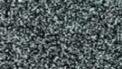
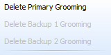
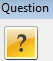
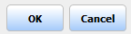
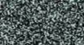
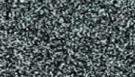
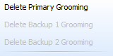
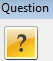
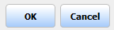
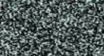

#Delete the primary grooming from ME7000 front-end
#This routine assume the output group is already selected.
#inputs: optional: groomType=[Primary, Backup1, Backup2]. Default will be Primary
#Usage: delete_primary_grooming.sikuli
###############################################################
#common code for every sikuli code. Do not remove this section
from me7klib import *
###############################################################
#YOUR code start here
###############################################################
#This is your check for the inputs that you are expecting.
def Check_args():
#checking for optional arguments
if not Get_arg('groomType'):
Set_arg('groomType', 'Primary')
Print_debug('groomType is not defined. Will use Primary as default.')
Check_args()
############################################################
#Main program definitions code start from this point
#Any global variables here
#Any definitions are here
def Delete_Grooming():
#first need to select Output group tabs
Set_arg('tabName', 'Processing')
runScript(sikuliScriptDir + 'nav_tabs')
wait( )
#check if the vertical bar is in correct position
if not exists(Pattern().similar(0.90)):
click(Pattern().targetOffset(-49,17)); rightClick(Pattern().targetOffset(-49,17)); wait(Pattern().similar(0.90))
mygroom = Get_arg('groomType')
if mygroom == 'Primary': click(Pattern().similar(0.90).targetOffset(-16,-30))
elif mygroom == 'Backup1': click(Pattern().similar(0.90).targetOffset(-14,-5))
elif mygroom == 'Backup2': click(Pattern().similar(0.90).targetOffset(-15,19))
else: Exit_program('Invalid port number: ' + myoutput)
wait(); click(Pattern().targetOffset(-35,-1)); wait(Pattern().similar(0.89))
RunSikuli('apply_groom_changes')
wait(Pattern().similar(0.90), 10)
if exists(Pattern().similar(0.90)): Print_debug('Groom deleted successfully.')
else: Exit_program('Groom failed to delete.')
else:
Print_debug('Selected groom seemed to be inactive. Does not need to do anything')
#######################################################
#Main program flow
Delete_Grooming()
)
#check if the vertical bar is in correct position
if not exists(Pattern().similar(0.90)):
click(Pattern().targetOffset(-49,17)); rightClick(Pattern().targetOffset(-49,17)); wait(Pattern().similar(0.90))
mygroom = Get_arg('groomType')
if mygroom == 'Primary': click(Pattern().similar(0.90).targetOffset(-16,-30))
elif mygroom == 'Backup1': click(Pattern().similar(0.90).targetOffset(-14,-5))
elif mygroom == 'Backup2': click(Pattern().similar(0.90).targetOffset(-15,19))
else: Exit_program('Invalid port number: ' + myoutput)
wait(); click(Pattern().targetOffset(-35,-1)); wait(Pattern().similar(0.89))
RunSikuli('apply_groom_changes')
wait(Pattern().similar(0.90), 10)
if exists(Pattern().similar(0.90)): Print_debug('Groom deleted successfully.')
else: Exit_program('Groom failed to delete.')
else:
Print_debug('Selected groom seemed to be inactive. Does not need to do anything')
#######################################################
#Main program flow
Delete_Grooming()